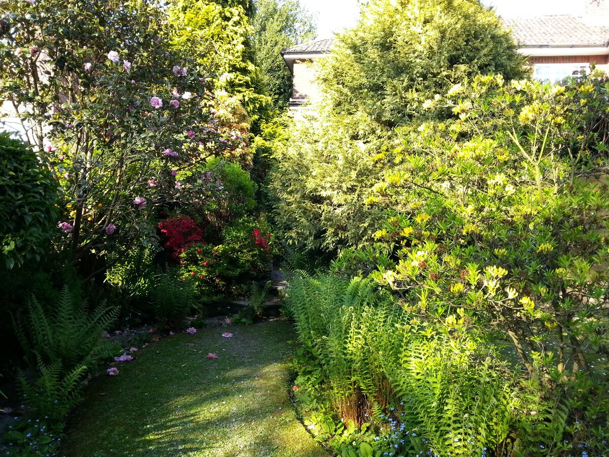
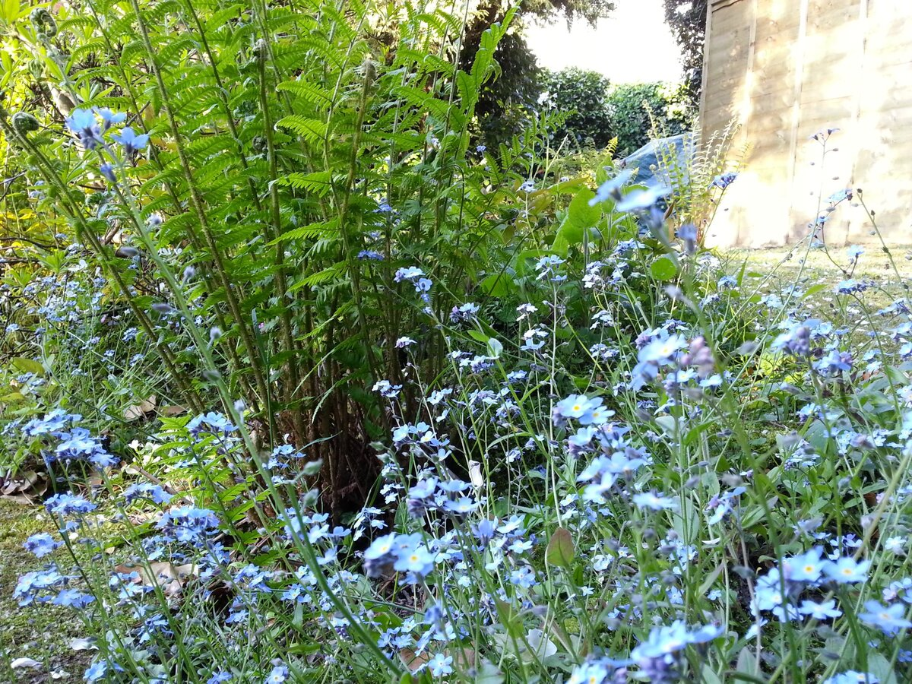
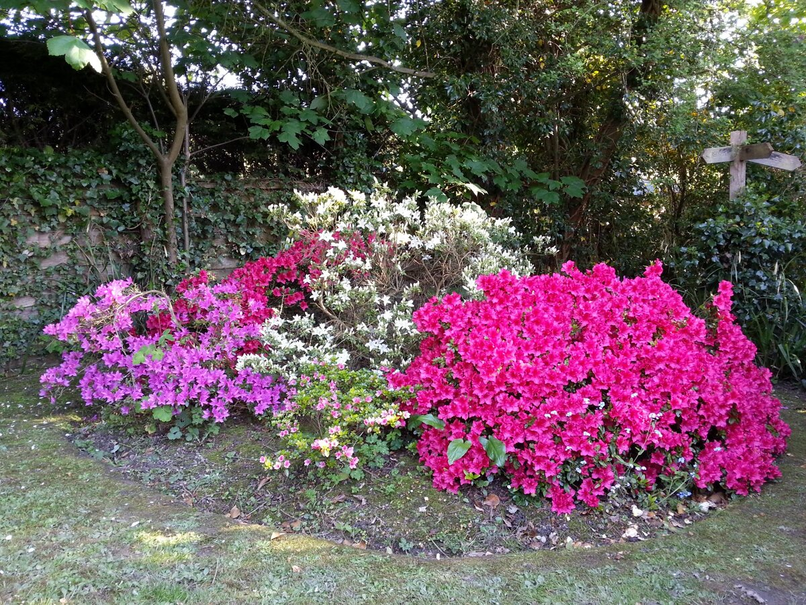
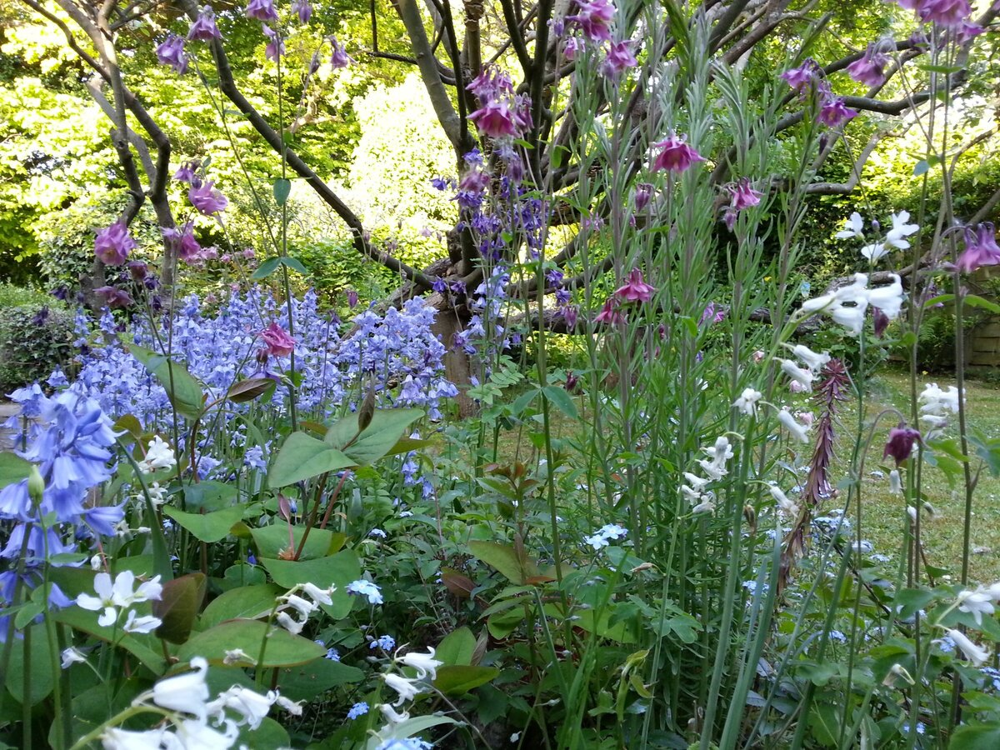
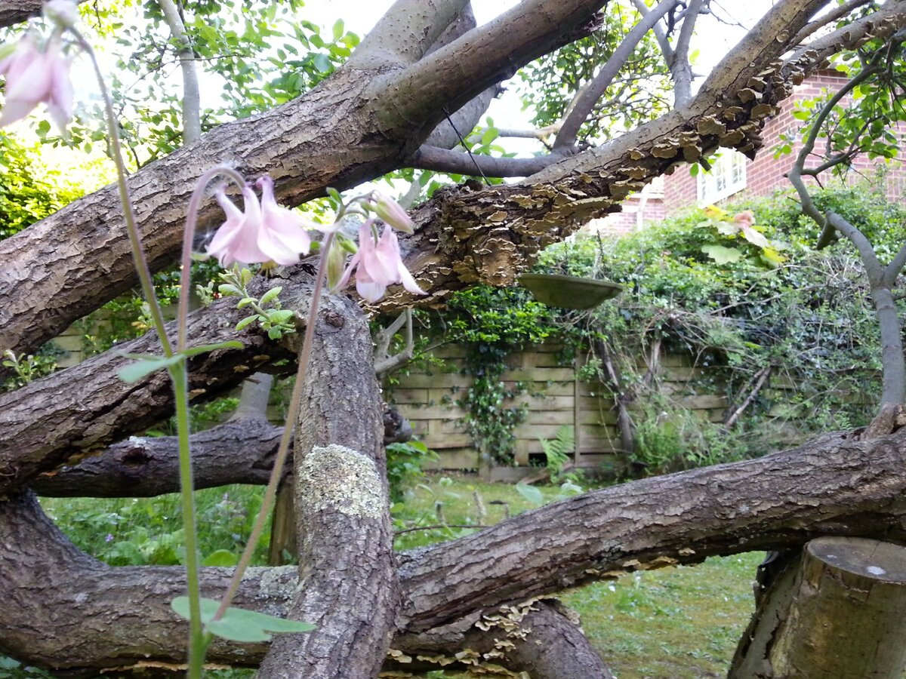

Pearl Thornton was born in Northumberland in 1928. She came to Battle as a child of ten and never left. For eighty years she lived in the same house on Netherfield Road — a semi-detached two-up two-down with a steep drive off an unadopted road, a concrete garage her father erected, and a garden that grew according to its own wishes as much as hers.
For forty-eight years she taught at Battle and Langton Church of England Primary School, arriving in 1950 and staying until her retirement in 1998. She rose to Deputy Headteacher. She taught generations of the same families — including her neighbour Jon Stiles, and later his son John David. In 1977 she was awarded the Queen Elizabeth II Silver Jubilee Medal for services to education. She never mentioned it to anyone.


The rear garden was dense, layered, overflowing. Ferns seeded themselves wherever they chose, and Pearl always let them. In spring the azaleas blazed — deep pink, magenta, cerise and white together. Bluebells came back every year without any help, which Pearl thought was exactly right. The apple tree in the front garden had fallen years ago but was not dead — it rested on its elbow and carried on.
In one corner of the azalea bank stood a wooden signpost from the White Lodge community. At the bottom of the garden, among the bluebells, a cast iron statue of Saint Francis — the patron of birds and all living things. Beside him, a wooden bench, a gift from the White Lodge community. That was where she liked to sit.



"The fullness of life from beginning to end, opens into a new flowering."
— Peter Goldman, Centre of New DirectionsPearl was a devoted member of the White Lodge community — the Centre of New Directions, founded by Ronald Beesley and continued by Peter Goldman. She believed in the harmonious awakening of the whole human being, through light, colour, sound, and stillness. She hosted meetings in her home, which would be rammed with like-minded people. Peter Goldman would talk. Some people sat on the floor. In the break Pearl made tea and passed round cakes. It was warm and serious and unhurried.
The teaching of White Lodge was woven into everything: the garden, the way she listened, the poems she wrote and illustrated. "We are made from the dust of starlight" was not a metaphor for her. It was simply true.
Pearl was described by colleagues and former pupils as gentle and musical — a central figure in the local community whose influence inspired students to become teachers themselves and return to work alongside her. Beyond her teaching she loved literature, poetry, and wildlife, often illustrating her own poems. She played the dark upright piano in her piano room, its key cover nearly always closed, the sheet music waiting on the stand.
She died on 22 December 2018, aged 90, from pneumonia. She is buried in Battle. Her bench is in Jon's garden.